5 Body condition ~ cytokines
5.2 Data
cyto <-
read.csv("Output Files/cleaned_cytokine.csv")
cytobin <-
read.csv("Output Files/cleaned_cytokine_bin.csv")
meta <-
read.csv("Output Files/metadata_cyto.csv") %>%
mutate(iav=gsub("neg", "IAV-", iav),
iav=gsub("pos", "IAV+", iav))
# Merge cytokine & metadata
data <-
merge(cyto, meta, by="Sample") %>%
filter(!is.na(bc_bin)) %>%
mutate(bc_bin = factor(bc_bin, levels=c("Poor", "Average", "Robust")))
databin <-
merge(cytobin, meta, by="Sample") %>%
filter(!is.na(bc_bin)) %>%
mutate(bc_bin = factor(bc_bin, levels=c("Poor", "Average", "Robust")))5.3 Body Condition Range & Bins
quant <- quantile(meta$bodcond, na.rm=TRUE)
ggplot(meta, aes(x=bodcond)) +
geom_histogram(bins=10, color="black", fill="gray80") +
labs(x="Body Condition Index", y="Frequency") +
geom_vline(xintercept=c(quant[2], quant[3], quant[4]), colour="red", linewidth=1) +
theme_classic()## Warning: Removed 8 rows containing non-finite outside the scale
## range (`stat_bin()`).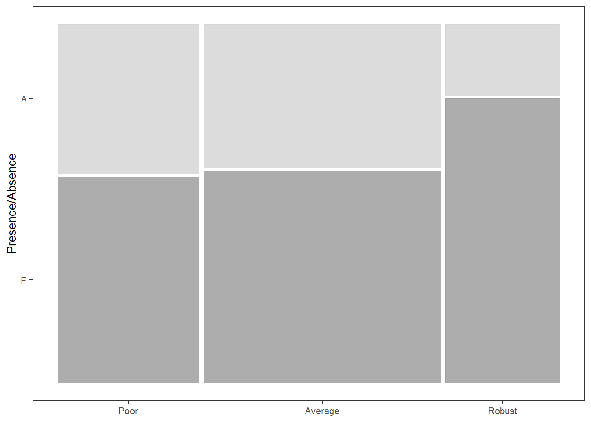
5.4 PERMANOVA
5.4.1 Cytokine Presence/Absence
5.4.1.1 Create similarity matrix (Sorensen)
Dissimilarity = 1-Sorensen
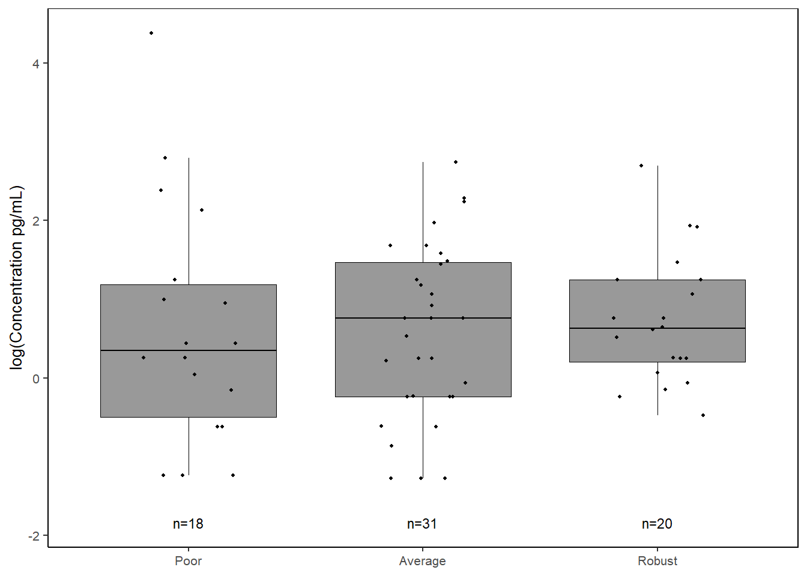
# Dissimilarity summary stats
mean(1-databin_dist); min(1-databin_dist); max(1-databin_dist); median(1-databin_dist)## [1] 0.3968242## [1] 0## [1] 0.8## [1] 0.45.4.1.2 Run PERMANOVA
Use restricted permutation test - data are not exchangeable between analysis years so permute within groups defined by strata.
** Not sig
# define permutations & strata
permute_databin <-
how(plots=Plots(strata=databin$analysis.year, type="none"), nperm=4999)
# run permanova
adonis2((1-databin_dist) ~ bc_bin,
data=databin,
permutations=permute_databin)## Permutation test for adonis under reduced model
## Plots: databin$analysis.year, plot permutation: none
## Permutation: free
## Number of permutations: 4999
##
## adonis2(formula = (1 - databin_dist) ~ bc_bin, data = databin, permutations = permute_databin)
## Df SumOfSqs R2 F Pr(>F)
## Model 2 0.3617 0.03498 1.9032 0.2096
## Residual 105 9.9764 0.96502
## Total 107 10.3381 1.000005.4.1.3 Homogeneity of group dispersions
** Robust vs Poor & Robust vs Average
## Warning in betadisper((1 - databin_dist), group = databin$bc_bin, type =
## "centroid"): some squared distances are negative and changed to zero##
## Homogeneity of multivariate dispersions
##
## Call: betadisper(d = (1 - databin_dist), group = databin$bc_bin, type =
## "centroid")
##
## No. of Positive Eigenvalues: 8
## No. of Negative Eigenvalues: 35
##
## Average distance to centroid:
## Poor Average Robust
## 0.3097 0.3086 0.2086
##
## Eigenvalues for PCoA axes:
## (Showing 8 of 43 eigenvalues)
## PCoA1 PCoA2 PCoA3 PCoA4 PCoA5 PCoA6 PCoA7 PCoA8
## 5.6391 2.8835 2.2162 1.6917 1.5373 0.7135 0.5030 0.3558## Analysis of Variance Table
##
## Response: Distances
## Df Sum Sq Mean Sq F value Pr(>F)
## Groups 2 0.19364 0.096822 10.554 6.657e-05 ***
## Residuals 105 0.96323 0.009174
## ---
## Signif. codes: 0 '***' 0.001 '**' 0.01 '*' 0.05 '.' 0.1 ' ' 1## Tukey multiple comparisons of means
## 95% family-wise confidence level
##
## Fit: aov(formula = distances ~ group, data = df)
##
## $group
## diff lwr upr p adj
## Average-Poor -0.001129045 -0.05279805 0.05053996 0.9985132
## Robust-Poor -0.101094275 -0.16230348 -0.03988507 0.0004504
## Robust-Average -0.099965230 -0.15538277 -0.04454769 0.0001180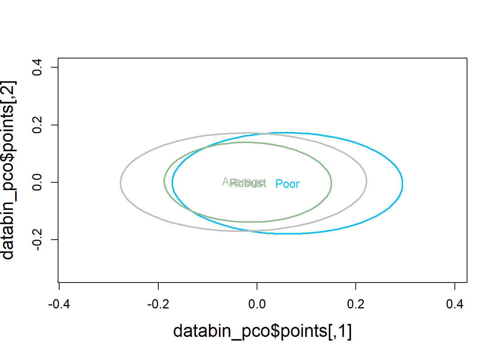
5.4.1.4 Visualization
Principal Coordinates Analysis
# Use 1 - Sorensen's for dissimilarity
databin_pco <- cmdscale((1-databin_dist), eig=TRUE)
plot(databin_pco$points, type="n",
cex.lab=1.5, cex.axis=1.1, cex.sub=1.1)
ordiellipse(ord = databin_pco,
groups = factor(data$bc_bin),
display = "sites",
col = c("deepskyblue", "grey", "darkseagreen"),
lwd = 2,
label = TRUE)
plot(databin_pco$points, type="n",
cex.lab=1.5, cex.axis=1.1, cex.sub=1.1)
ordispider(ord = databin_pco,
groups = factor(data$bc_bin),
display = "sites",
col = c("deepskyblue", "grey", "darkseagreen"),
lwd=2,
label=TRUE)
5.4.2 Cytokine Concentration
5.4.2.2 Run PERMANOVA
** Not sig
# define permutations & strata
permute_data <- how(plots=Plots(strata=data$analysis.year, type="none"), nperm=4999)
# run permanova
adonis2(data_dist ~ bc_bin,
data=data,
permutations=permute_data)## Permutation test for adonis under reduced model
## Plots: data$analysis.year, plot permutation: none
## Permutation: free
## Number of permutations: 4999
##
## adonis2(formula = data_dist ~ bc_bin, data = data, permutations = permute_data)
## Df SumOfSqs R2 F Pr(>F)
## Model 2 0.3491 0.01973 1.0565 0.521
## Residual 105 17.3505 0.98027
## Total 107 17.6997 1.000005.4.2.3 Homogeneity of group dispersions
** Not sig
## Analysis of Variance Table
##
## Response: Distances
## Df Sum Sq Mean Sq F value Pr(>F)
## Groups 2 0.02781 0.013903 0.5397 0.5845
## Residuals 105 2.70504 0.025762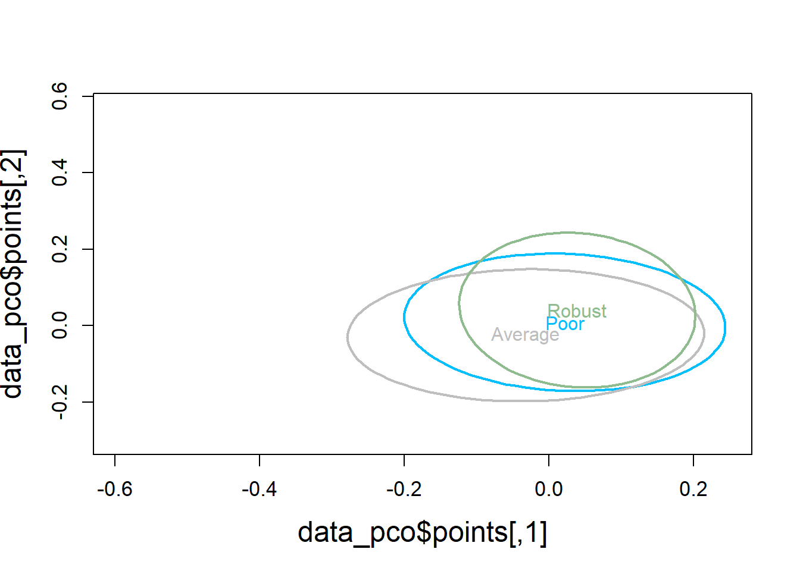
5.4.2.4 Visualization
# Use Bray-Curtis dissimilarity matrix
data_pco <- cmdscale(data_dist, eig=TRUE)
plot(data_pco$points, type="n",
cex.lab=1.5, cex.axis=1.1, cex.sub=1.1)
ordiellipse(ord = data_pco,
groups = factor(data$bc_bin),
display = "sites",
col = c("deepskyblue", "grey", "darkseagreen"),
lwd = 2,
label = TRUE)
plot(data_pco$points, type="n",
cex.lab=1.5, cex.axis=1.1, cex.sub=1.1)
ordispider(ord = data_pco,
groups = factor(data$bc_bin),
display = "sites",
col = c("deepskyblue", "grey", "darkseagreen"),
lwd=2,
label=TRUE)
5.5 PLS-DA
5.5.3 Detect batch effects
Reference: https://evayiwenwang.github.io/PLSDAbatch_workflow/
pca_before <-
mixOmics::pca(pls_x_clr, scale=TRUE)
plotIndiv(pca_before,
group=data$analysis.year,
pch=20,
legend = TRUE, legend.title = "Analysis Year",
title = "Before Batch Correction",
ellipse = TRUE, ellipse.level=0.95)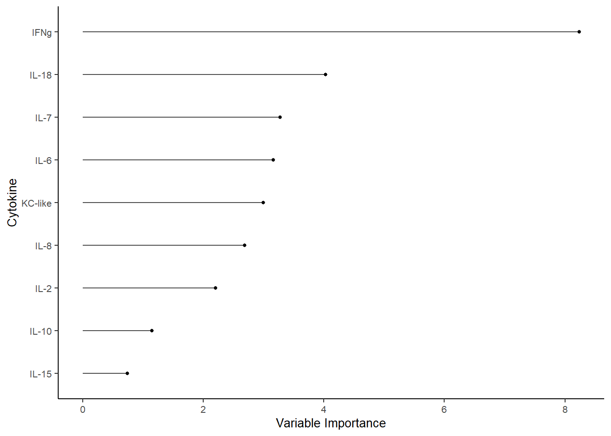
Scatter_Density(object = pca_before,
batch = pls_y$analysis.year,
trt = pls_y$bc_bin,
trt.legend.title = "Body Condition",
color.set = c("#9d9d9d","#008ba2","black"))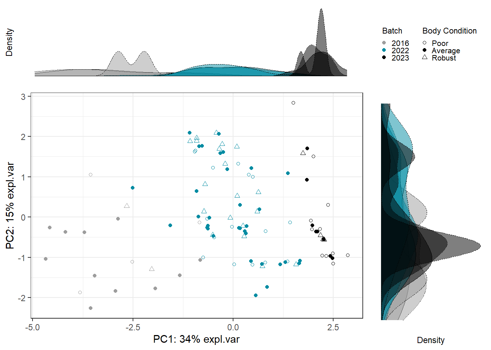
5.5.3.1 Estimate # variable components
Use PLSDA from mixOmics with only treatment to choose number of treatment components to preserve.
Number = that explains 100% of variance in outcome matrix Y.
## $X
## comp1 comp2 comp3 comp4 comp5 comp6 comp7
## 0.31738239 0.12863676 0.12466645 0.09089348 0.06328953 0.06339432 0.12655617
## comp8 comp9
## 0.08518090 0.19863216
##
## $Y
## comp1 comp2 comp3 comp4 comp5 comp6 comp7 comp8
## 0.5350530 0.4589453 0.4660231 0.3818196 0.4724626 0.3658912 0.3766012 0.5099951
## comp9
## 0.3803967## [1] 1.4600215.5.3.2 Estimate # batch components
Use PLSDA_batch with both treatment and batch to estimate optimal number of batch components to remove.
For ncomp.trt, use # components found above. Samples are not balanced across batches x treatment, using balance = FALSE.
Choose # that explains 100% variance in outcome matrix Y.
batch_comp <-
PLSDA_batch(X = pls_x_clr,
Y = pls_y$bc_bin,
Y.bat = pls_y$analysis.year,
balance = FALSE,
ncomp.trt = 3, ncomp.bat = 9)
batch_comp$explained_variance.bat## $X
## comp1 comp2 comp3 comp4 comp5 comp6 comp7
## 0.32330102 0.27932320 0.19722592 0.08872241 0.11142745 0.01222439 0.05790729
## comp8 comp9
## 0.23005690 0.06316262
##
## $Y
## comp1 comp2 comp3 comp4 comp5 comp6 comp7
## 0.50837607 0.46461813 0.02700579 0.47992928 0.26376781 0.15443827 0.46656474
## comp8 comp9
## 0.19928134 0.22996614## [1] 15.5.3.3 Correct for batch effects
Use optimal number of components determined above.
Treatment = 3, Batch = 3
plsda_batch <-
PLSDA_batch(X = pls_x_clr,
Y = pls_y$bc_bin,
Y.bat = pls_y$analysis.year,
balance = FALSE,
ncomp.trt = 3, ncomp.bat = 3)
data_batch_matrix <-
plsda_batch$X.nobatch
data_batch_df <-
data_batch_matrix %>%
data.frame() %>%
mutate(bc_bin = pls_y$bc_bin)
write.csv(data_batch_df, "Output Files/batchcorrected_bodycondition.csv")5.5.4 PLSDA on Batch-Corrected Data
plsda_model <-
plsda(data_batch_matrix,
pls_y$bc_bin,
scale=TRUE)
plotIndiv(plsda_model,
group=pls_y$bc_bin,
pch=20,
legend = TRUE, legend.title = "Body Condition",
ellipse = TRUE, ellipse.level = 0.95)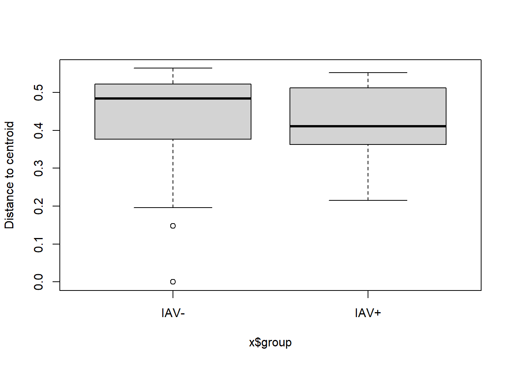
5.5.5 Visualization
5.5.5.3 Plot
bc_plsda_ggplot <-
ggplot(plsda_ggplot,
aes(x=x,
y=y,
col=bc_bin)) +
geom_point() +
stat_ellipse() +
labs(x=labelx,
y = labely,
name="Body Condition") +
scale_color_manual("Body Condition",
values=c("#9d9d9d","#008ba2", "black")) +
theme_bw() +
theme(panel.grid = element_blank())
bc_plsda_ggplot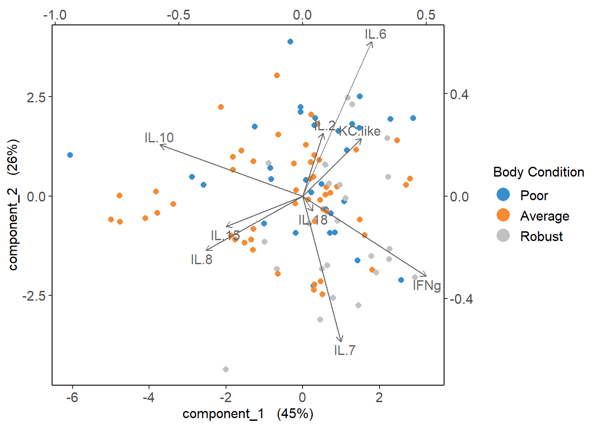
5.5.6 Cytokine Contributions
plsda_loadings <-
plsda_model$loadings$X %>%
data.frame() %>%
select(1:2) %>%
arrange(comp1)
plsda_loadings## comp1 comp2
## IL.10 -0.57785153 0.20015962
## IL.8 -0.39137488 -0.21299820
## IL.15 -0.31001015 -0.11902472
## IL.18 0.04164036 -0.05833014
## IL.2 0.08230983 0.24591548
## IL.7 0.15436553 -0.56838363
## KC.like 0.23766248 0.22575495
## IL.6 0.27899879 0.60357885
## IFNg 0.50014567 -0.31335523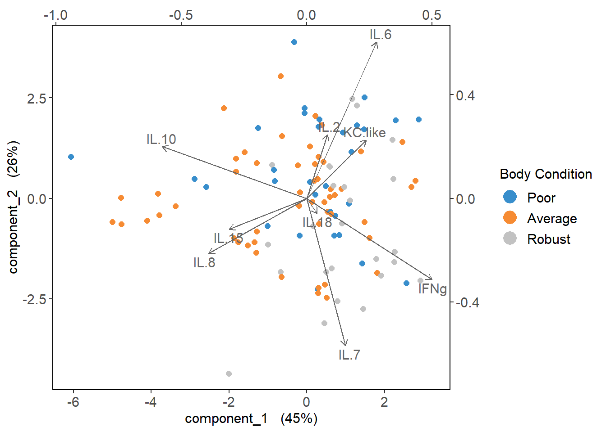
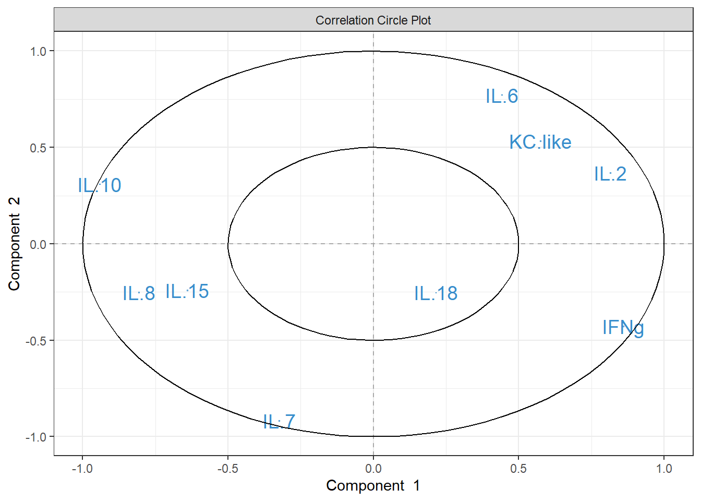
5.6 CART
Cytokine Importance ### Prepare data
data_cart <-
data %>%
select(2:10, bc_bin) %>%
mutate(bc_bin=factor(bc_bin, levels=c("Poor", "Average", "Robust")))5.6.1 Cross Validation
See reference: https://mlr3book.mlr-org.com/
# Creating task and learner
task <- as_task_classif(bc_bin ~ .,
data = data_cart)
task <- task$set_col_roles(cols="bc_bin",
add_to="stratum")
# Minimum body condition group size = 25
learner <- lrn("classif.rpart",
predict_type = "prob",
maxdepth = to_tune(2, 5),
minbucket = to_tune(1, 25),
minsplit = to_tune(1, 30)
)
# Define tuning instance - info ~ tuning process
instance <- ti(task = task,
learner = learner,
resampling = rsmp("cv", folds = 10),
measures = msr("classif.ce"),
terminator = trm("none")
)
# Define how to tune the model
tuner <- tnr("grid_search",
batch_size = 10
)
# Trigger the tuning process
#tuner$optimize(instance)
# optimal values:
# maxdepth = 4
# minbucket = 3
# minsplit = 20
# classif.ce = 0.50581595.6.2 Run CART
cart_model <- rpart(formula = bc_bin ~ .,
data = data_cart,
method = "class",
maxdepth = 4,
minbucket = 3,
minsplit = 20)
# plot optimized tree
rpart.plot(cart_model)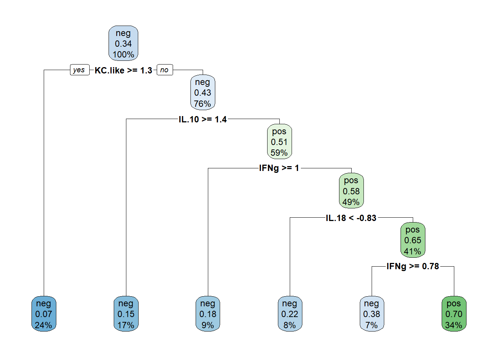
## IFNg IL.18 IL.7 IL.6 KC.like IL.8 IL.2 IL.10
## 8.2395276 4.0308782 3.2719627 3.1615886 2.9903868 2.6831169 2.2012003 1.1462952
## IL.15
## 0.73645435.6.3 Plot
5.6.3.1 Variable Importance
varimp <-
data.frame(imp=cart_model$variable.importance) %>%
rownames_to_column() %>%
rename("variable" = rowname) %>%
arrange(imp) %>%
mutate(variable=gsub("\\.","-",variable),
variable = forcats::fct_inorder(variable))
varimp_plot <-
ggplot(varimp) +
geom_segment(aes(x = variable,
y = 0,
xend = variable,
yend = imp),
linewidth = 0.5,
alpha = 0.7) +
geom_point(aes(x = variable,
y = imp),
size = 1,
show.legend = F,
col="black") +
labs(x="Cytokine",
y="Variable Importance") +
coord_flip() +
theme_classic() +
theme(text=element_text(size=10, color="black"))
varimp_plot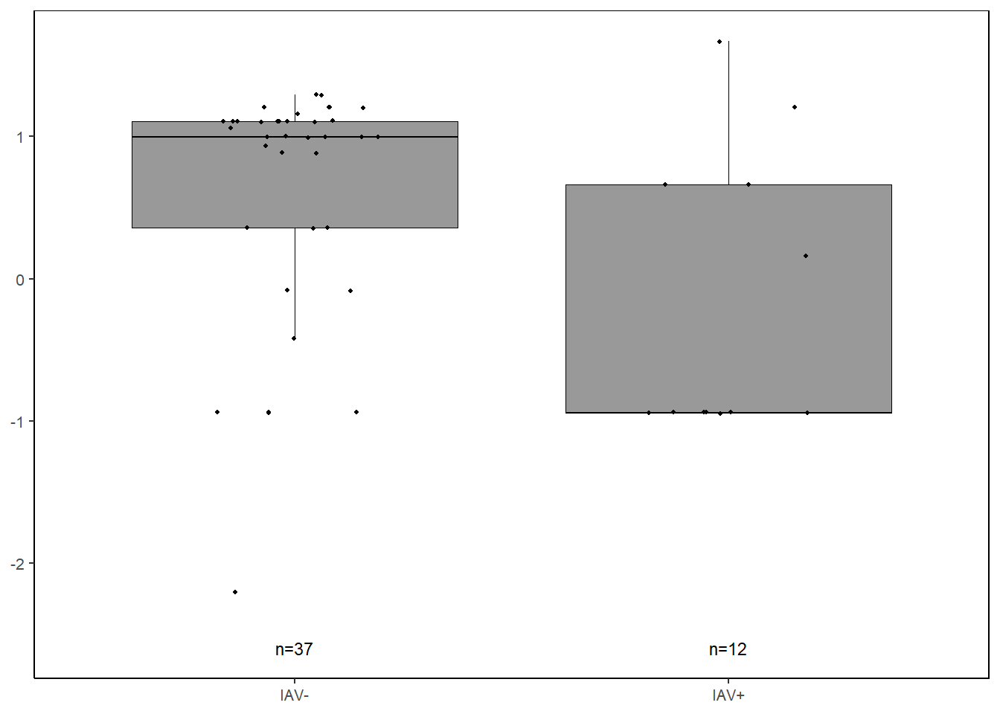
5.6.3.2 Proportions
##
## 0 1
## Poor 41.93548 58.06452
## Average 40.38462 59.61538
## Robust 20.00000 80.00000ifng_prop <-
databin %>%
mutate(IFNg=gsub("1", "Present", IFNg),
IFNg=gsub("0", "Absent", IFNg),
IFNg=factor(IFNg, levels=c("Present", "Absent"))) %>%
ggplot(data=.) +
geom_mosaic(aes(x=product(IFNg, bc_bin), fill=IFNg)) +
scale_fill_manual(values=c("Present"="gray60", "Absent"="lightgray"),
name="Cytokine") +
scale_y_continuous(labels = scales::percent) +
labs(y="Proportion of Samples") +
theme_bw() +
theme(panel.grid.major = element_blank(),
panel.grid.minor = element_blank(),
axis.title.x = element_blank(),
legend.position="bottom",
text = element_text(size=10),
plot.title = element_text(hjust = 0.5))
cyto_leg <-
get_legend(ifng_prop)
ifng_prop <-
ifng_prop +
theme(legend.position="none")5.6.3.3 Concentration
ifng <-
data %>%
select(bc_bin, IFNg) %>%
filter(!IFNg==0) %>%
ggplot(., aes(x=bc_bin, y=log(IFNg))) +
geom_boxplot(color="black", fill="gray60", lwd=0.25,
outliers=FALSE) +
geom_point(size=0.75, position=position_jitter(width=0.2)) +
labs(x=NULL, y="log(Concentration pg/mL)") +
stat_n_text(size=3) +
theme_classic() +
theme(text = element_text(size=10),
panel.border=element_rect(color="black", fill=NA, linewidth=0.5))5.6.3.4 Combine
cyto <- grid.arrange(ifng_prop,ifng,
ncol = 2,
top = textGrob(label="IFNg"),
bottom=textGrob("Body Condition", gp=gpar(fontsize=10)))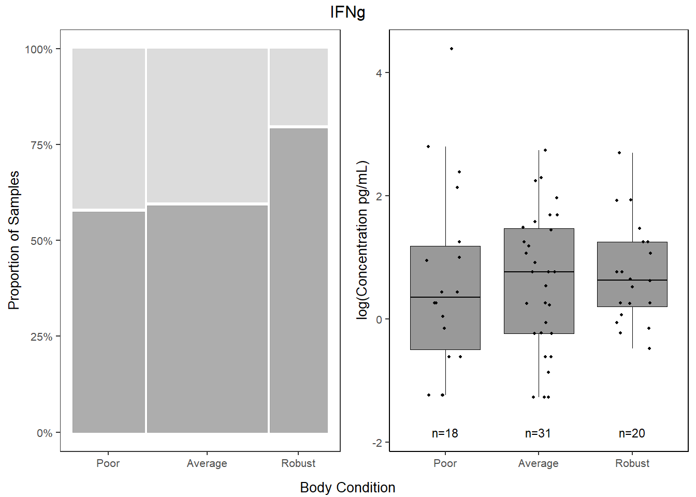
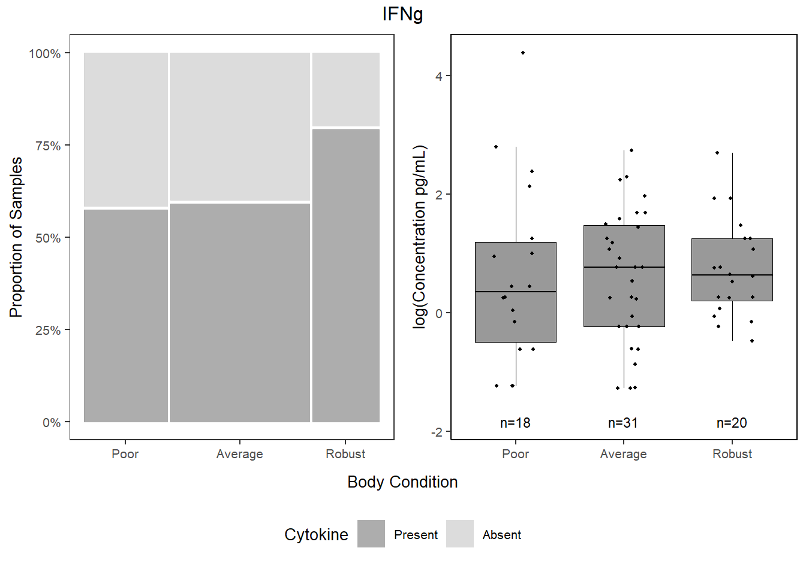
jpeg("Figures/cytoimportance_bodycondition.jpeg", width=7, height=6, units="in", res=300)
all <- grid.arrange(varimp_plot, bottom,
heights=c(1.25,2))
grid.polygon(x=c(0, 0, 1, 1),
y=c(0, 0.62, 0.62, 0),
gp=gpar(fill=NA))
grid.polygon(x=c(0.02, 0.02, 0.97, 0.97),
y=c(0.955, 0.99, 0.99, 0.955),
gp=gpar(fill=NA))
dev.off()## png
## 2